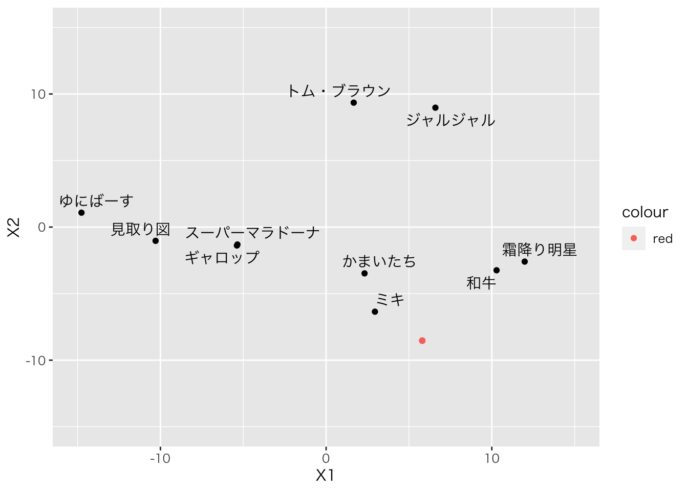
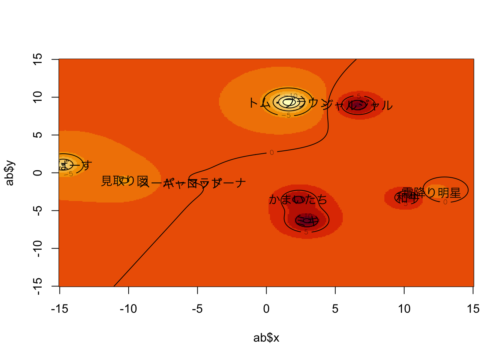

# 必須ツール
library(tidyverse)
# ラベルの重複を避けるパッケージ
library(ggrepel)
# マカーの呪文
old = theme_set(theme_gray(base_family = "HiraKakuProN-W3"))
par(family = "HiraKakuProN-W3")# 30F
m1 <- read_csv("matrix1.csv") %>% as.matrix
# 60M
m2 <- read_csv("matrix2.csv") %>% as.matrix
# 50F
m3 <- read_csv("matrix3.csv") %>% as.matrix
# 40F
m4 <- read_csv("matrix4.csv") %>% as.matrix
# 50M
m5 <- read_csv("matrix5.csv") %>% as.matrix
## 行列を合わせます
M <- list(m1,m2,m3,m4,m5)library(smacof)## Loading required package: plotrix##
## Attaching package: 'smacof'## The following object is masked from 'package:base':
##
## transformresult.indscal <- smacofIndDiff(M,ndim=2,type="ordinal",
constraint="indscal")
# 描画
result.indscal$gspace %>% as.data.frame %>%
mutate(label = colnames(m1)) %>%
ggplot(aes(x=D1,y=D2,label=label))+geom_point()+geom_text_repel()# 重み付け
result.indscal$cweights## [[1]]
## D1 D2
## D1 1.211163 0.0000000
## D2 0.000000 0.8236638
##
## [[2]]
## D1 D2
## D1 1.261578 0.0000000
## D2 0.000000 0.7443671
##
## [[3]]
## D1 D2
## D1 1.13886 0.0000000
## D2 0.00000 0.9356096
##
## [[4]]
## D1 D2
## D1 0.926639 0.000000
## D2 0.000000 1.150412
##
## [[5]]
## D1 D2
## D1 0.7511285 0.000000
## D2 0.0000000 1.297436## MDSの座標
result.MDS2$points## [,1] [,2]
## 見取り図 -10.291244 -1.033167
## スーパーマラドーナ -5.352259 -1.309168
## かまいたち 2.318421 -3.477969
## ジャルジャル 6.594532 8.970730
## ギャロップ -5.384316 -1.385389
## ゆにばーす -14.763725 1.082202
## ミキ 2.944927 -6.357326
## トム・ブラウン 1.664326 9.348709
## 霜降り明星 11.982873 -2.594123
## 和牛 10.286466 -3.244500## データフレームにして操作
result.MDS2$points %>% data.frame %>%
# 変数名を作成
mutate(Player=rownames(.)) %>%
# 個人の選好を追加
mutate(Pref=c(70,80,85,90,70,60,90,50,70,85)) %>%
# 第一項のために二乗和を計算
mutate(XX = X1^2+X2^2) %>% print -> PrefData## X1 X2 Player Pref XX
## 1 -10.291244 -1.033167 見取り図 70 106.97714
## 2 -5.352259 -1.309168 スーパーマラドーナ 80 30.36059
## 3 2.318421 -3.477969 かまいたち 85 17.47135
## 4 6.594532 8.970730 ジャルジャル 90 123.96184
## 5 -5.384316 -1.385389 ギャロップ 70 30.91016
## 6 -14.763725 1.082202 ゆにばーす 60 219.13872
## 7 2.944927 -6.357326 ミキ 90 49.08818
## 8 1.664326 9.348709 トム・ブラウン 50 90.16834
## 9 11.982873 -2.594123 霜降り明星 70 150.31871
## 10 10.286466 -3.244500 和牛 85 116.33816## 回帰分析で係数を算出
result.lm <- lm(Pref~XX+X1+X2,data=PrefData)
summary(result.lm)##
## Call:
## lm(formula = Pref ~ XX + X1 + X2, data = PrefData)
##
## Residuals:
## Min 1Q Median 3Q Max
## -18.035 -4.439 1.397 3.428 20.445
##
## Coefficients:
## Estimate Std. Error t value Pr(>|t|)
## (Intercept) 79.75528 7.67343 10.394 4.65e-05 ***
## XX -0.05087 0.06996 -0.727 0.494
## X1 0.59038 0.48553 1.216 0.270
## X2 -0.86811 0.84991 -1.021 0.346
## ---
## Signif. codes: 0 '***' 0.001 '**' 0.01 '*' 0.05 '.' 0.1 ' ' 1
##
## Residual standard error: 12.7 on 6 degrees of freedom
## Multiple R-squared: 0.3955, Adjusted R-squared: 0.09322
## F-statistic: 1.308 on 3 and 6 DF, p-value: 0.3554## 係数を使って計算
Ideal <- c(-0.5*0.590379/(-0.05087315),-0.5*(-0.8681056)/(-0.05087315))
## 描画
PrefData %>%
ggplot(aes(x=X1,y=X2,label=Player)) + geom_point() +
xlim(-15,15) + ylim(-15,15) + geom_text_repel(family= "HiraKakuProN-W3") +
geom_point(aes(x=Ideal[1],y=Ideal[2],color="red"))
# 自作関数Abelson.map
Abelson.map <- function(dat,locations){
z <- double()
X <- dat[,1]
Y <- dat[,2]
P <- dat[,3]
un <- matrix(1,nrow(locations),1,)
Xs <- un %*% X
Ys <- un %*% Y
dm <- ((locations[,1]-Xs)^2+(locations[,2]-Ys)^2+1)
V <- t(P %*% (1/t(dm)))
xx <- sort(unique(locations[,1]))
nx <- length(xx)
yy <- sort(unique(locations[,2]))
ny <- length(yy)
values <- matrix(V,ncol=ny)
ret <- structure(list(x=xx,y=yy,valence=values))
return(ret)
}## 空間全体の座標を作成
loc <- expand.grid(seq(-15,15,0.1),seq(-15,15,0.1))
## x,y,Vの座標をデータとする
result.MDS2$points %>% data.frame %>%
# 個人の選好を追加
mutate(Pref=c(70,80,85,90,70,60,90,50,70,85)-75) -> abDat
ab <- Abelson.map(abDat,loc)
image(x=ab$x, y=ab$y,z=ab$valence)
contour(x=ab$x,y=ab$y,z=ab$valence,add=TRUE,drawlabels=T)
par(family = "HiraKakuProN-W3")
text(result.MDS2$points,rownames(result.MDS2$points))
Asym <- matrix(c(0,1,1,7,1,0,1,7,7,7,0,1,1,1,7,0),nrow=4,byrow=T)
# 非対称行列
Asym## [,1] [,2] [,3] [,4]
## [1,] 0 1 1 7
## [2,] 1 0 1 7
## [3,] 7 7 0 1
## [4,] 1 1 7 0# 対称部
(Asym+t(Asym))/2## [,1] [,2] [,3] [,4]
## [1,] 0 1 4 4
## [2,] 1 0 4 4
## [3,] 4 4 0 4
## [4,] 4 4 4 0# 歪対称部
(Asym-t(Asym))/2## [,1] [,2] [,3] [,4]
## [1,] 0 0 -3 3
## [2,] 0 0 -3 3
## [3,] 3 3 0 -3
## [4,] -3 -3 3 0###############################
# HFM
#
hfm<-function(data)
{
if(!is.matrix(data)) #行列形式でなければ行列形式にしてしまう
data <- as.matrix(data)
if(ncol(data)!=nrow(data)) #正方行列かどうかのチェック
stop("data is not a square matrix")
#エルミート化
s <- (data+t(data))/2
sk <- (data-t(data))/2
Her <- matrix(complex(re=s,im=sk),ncol=ncol(s))
rownames(Her) <- colnames(data)
colnames(Her) <- colnames(data)
#固有値分解
eval <- eigen(Her)$values
evec <-eigen(Her)$vectors
rownames(evec) <- colnames(data)
#絶対値の順に並べ替え
od <- abs(eval)
eval <- eval[order(od,decreasing=TRUE)]
evec <- evec[,order(od,decreasing=TRUE)]
#寄与率の算出
gof <-eval*eval / (t(eval)%*%eval)
return(list(Hermitian =Her ,Eigen=eval,GOF=gof,Vecs=evec))
}
hfm.plot <-function(data,dim,Xlim=c(-1,1),Ylim=c(-1,1))
{
plot(data$Vecs[,dim],
main=paste("Dim", dim, "with Eigenvalue" ,round(data$Eigen[dim],3)),
xlab="real", #Xラベル
ylab="imag", #Yラベル
xlim=Xlim, #X範囲
ylim=Ylim, #Y範囲
axes=F)
axis(1, pos = 0, at = -3:3, adj = 0, col = 1) # X 軸を描く
axis(2, pos = 0, at = -3:3, adj = 1, las = 2) # Y 軸を描く
for( i in seq(along = data$Vecs[,dim]))
arrows(0,0,Re(data$Vecs[i,dim]),Im(data$Vecs[i,dim]))
text(data$Vecs[,dim],rownames(data$Vecs))
}result <- hfm(Asym)## Warning in eval * eval/(t(eval) %*% eval): Recycling array of length 1 in vector-array arithmetic is deprecated.
## Use c() or as.vector() instead.result## $Hermitian
## [,1] [,2] [,3] [,4]
## [1,] 0+0i 1+0i 4-3i 4+3i
## [2,] 1+0i 0+0i 4-3i 4+3i
## [3,] 4+3i 4+3i 0+0i 4-3i
## [4,] 4-3i 4-3i 4+3i 0+0i
##
## $Eigen
## [1] -11.450082 10.829026 1.621056 -1.000000
##
## $GOF
## [1] 0.520255466 0.465348410 0.010427870 0.003968254
##
## $Vecs
## [,1] [,2] [,3]
## [1,] -0.4268213+0.0000000i -0.4742193+0.0000000i 0.3048600+0.0000000i
## [2,] -0.4268213+0.0000000i -0.4742193+0.0000000i 0.3048600-0.0000000i
## [3,] 0.3121606+0.4694458i -0.5172090-0.0872403i -0.3674923+0.5215456i
## [4,] 0.3121606-0.4694458i -0.5172090+0.0872403i -0.3674923-0.5215456i
## [,4]
## [1,] -7.071068e-01+0.000000e+00i
## [2,] 7.071068e-01-0.000000e+00i
## [3,] -3.471326e-17+2.759175e-16i
## [4,] 6.757472e-18-2.621481e-16ihfm.plot(result,dim=1,Xlim=c(-0.5,0.5),Ylim=c(-0.5,0.5))